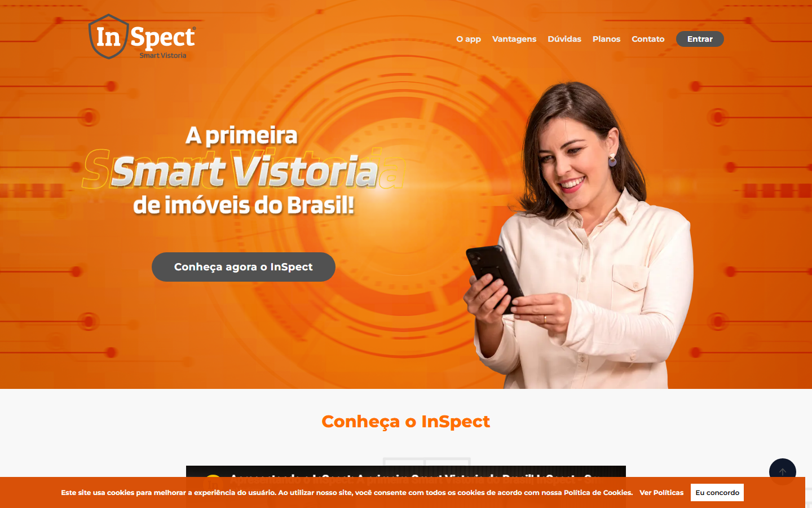
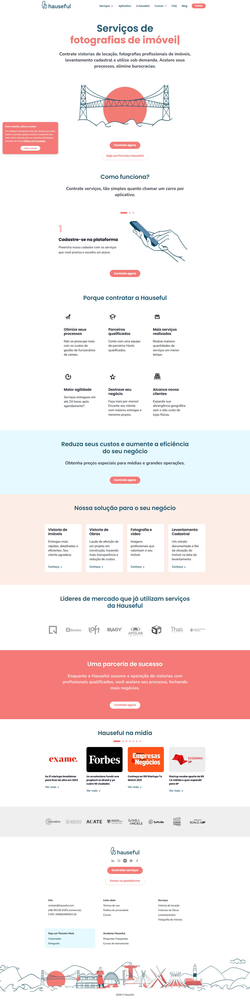
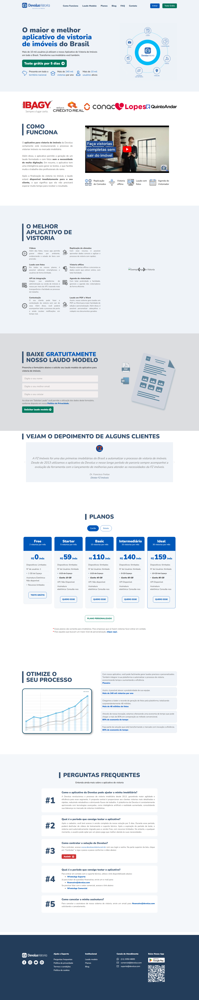
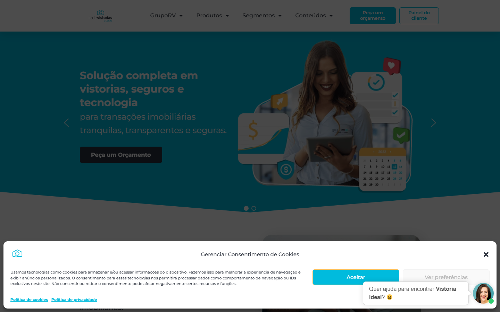
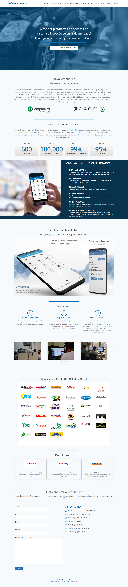

Documento de inteligência de mercado focado em Conversion Rate Optimization (CRO). Análise aprofundada da Landing Page da Inspect Vistorias comparada aos 4 maiores concorrentes diretos e indiretos do mercado de vistorias imobiliárias no Brasil (Hauseful, Devolus, Rede Vistorias e VistoriaPro).
| Empresa | Foco do Design | Call to Action (CTA) | Prova Social | Avaliação CRO |
|---|---|---|---|---|
| Inspect Vistorias O Alvo |
Funcional e Seguro (Demonstra as telas do sistema) | "Fale com um Especialista / Teste Grátis" | Logos de clientes e selos de integração | Médio. Faltam gatilhos rápidos de redução de dor na hero section. |
| Hauseful Concorrente 1 |
Dinâmico e Moderno (Apelo Fintech/Startup) | "Baixe o App / Quero ser Vistoriador" | Números enormes de tração e ecossistema parceiro | Alto. Joga muito bem com a terceirização do trabalho (uberização da vistoria). |
| Devolus Concorrente 2 |
Clean e Direto ao Ponto | "Começar Agora" | Forte foco em quantidade de laudos emitidos e cases em vídeo | Alto. Muito limpo, reduz ansiedade do operador da imobiliária. |
| Rede Vistorias Concorrente 3 |
Corporativo / Franquias | "Seja um Franqueado / Contrate" | Apelo brutal em estar em todas as capitais (Autoridade Nacional) | Médio. A divisão de foco (franqueado vs imobiliária) confunde o funil de entrada. |
| VistoriaPro Concorrente 4 |
Focado em Praticidade e Mobile | "Assine Já" (SaaS Puro) | Avaliações nas Lojas de App | Bom. Forte pegada de Produto SaaS, prioriza o download rápido do aplicativo. |
Abaixo, os laudos individuais das capturas de ecrã (1440px de largura) realizadas pelos nossos robôs em tempo real.





Abaixo detalhamos a abordagem de escrita e os estilos narrativos (gatilhos mentais) que ditam as negociações de cada plataforma.
O que acontece após a imobiliária ou o autônomo clicar no botão principal (CTA) da página inicial demandando interesse?